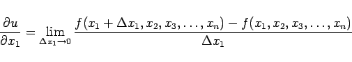
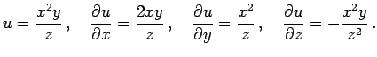

Inhalt Index DeskTop Bronstein

 Differentialrechnung Differentiation von Funktionen von mehreren Veränderlichen Partielle Ableitungen
Differentialrechnung Differentiation von Funktionen von mehreren Veränderlichen Partielle Ableitungen


|  | (6.35) |
definierte Differentialquotient, der zum Ausdruck bringt, daß nur eine der n Variablen variiert, während die anderen n - 1 dabei als Konstante betrachtet werden.
| Beispiel |
|
 |